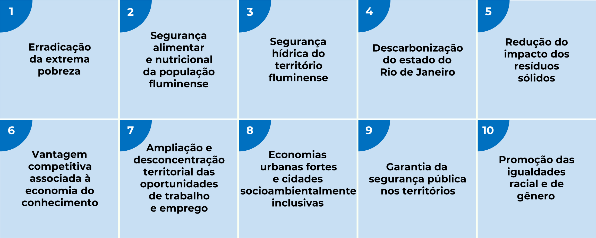

O PEDES adota a metodologia das Políticas Orientadas por Missões (POM), que pode ser entendida como a utilização do conhecimento científico para enfrentar problemas complexos. A POM, portanto, é uma forma de enfrentar desafios sistêmicos da sociedade, cabendo ao Estado mobilizar-se em torno daquilo que se quer atingir. Assim, o Estado tem um papel ativo de coordenar uma pauta comum aos setores público e privado, além de impulsionar o desenvolvimento econômico e social por meio da inovação e da tecnologia.
No PEDES, as missões foram exploradas coletivamente a partir de hipóteses que se desdobram em diretivas e
objetivos específicos. As diretivas indicam grandes objetivos cujo atingimento é uma realização parcial,
porém necessária, da missão. Para que cada diretiva seja alcançada, é necessário que sejam atingidos
objetivos específicos – elementos que, associados entre si, compõem o quadro que a diretiva descreve.
Atendendo à premissa da gestão baseada em evidências, foi organizado um elenco de indicadores que são
usados para acompanhar o andamento das 10 missões do PEDES e de seus objetivos específicos. As missões
do Pedes são:

Acesse aqui para conhecer mais sobre as missões do PEDES RJ.